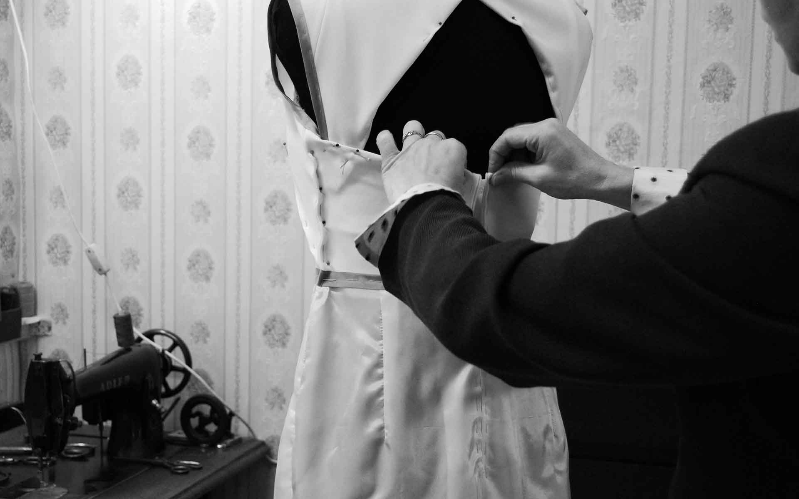
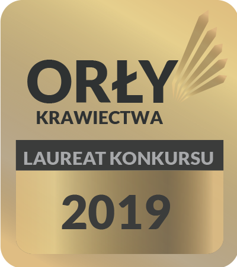
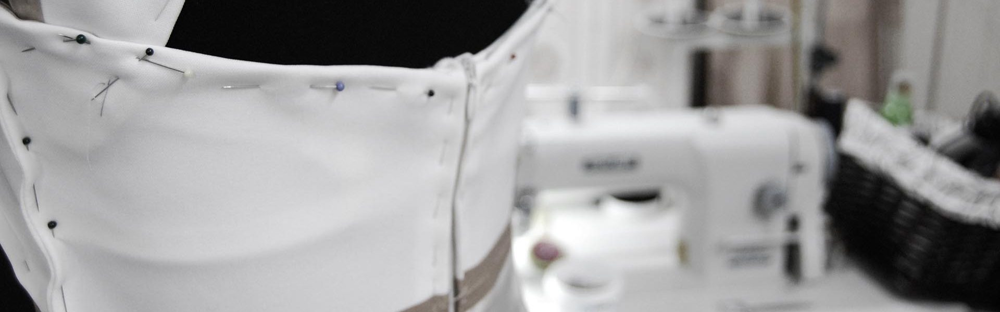
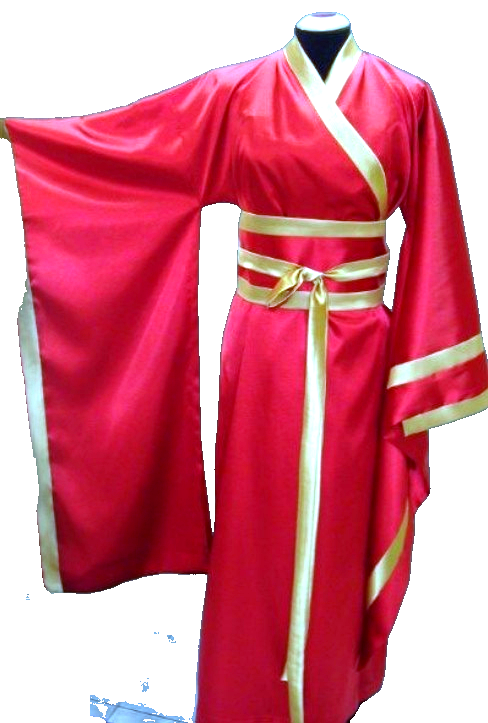
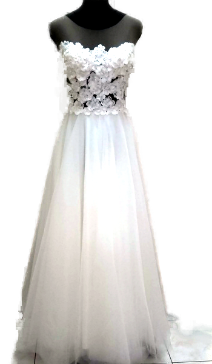
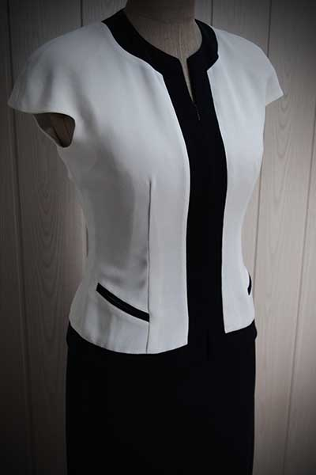

Kraków, ul. Dietla 48 — od 1986 roku
Krawiectwo szyte
na miarę Twojego pomysłu
Szyję według projektów klienta, konstruuję fasony od podstaw, stylizuję gotowe pomysły i poprawiam garderobę — z precyzją wypracowaną przez lata doświadczenia.
O pracowni
Dwa pokolenia, jedna igła
Zakład zrzeszony jest w Cechu Krawców i Pokrewnych Zawodów przy ul. Sławkowskiej 28 w Krakowie — rzemiosło potwierdzone, nie deklarowane.
- 1955
Roman Sysło rozpoczyna działalność w branży odzieżowej — początek rodzinnej tradycji krawieckiej.
- 1986
Powstaje pracownia Marii Sysło‑Mrówki jako kontynuacja rzemiosła ojca, po ukończeniu technikum odzieżowego.
- Dziś
Szycie na miarę, projekty klienta, stylizacje i poprawki — w tej samej pracowni przy ul. Dietla.
Cech Krawców i Pokrewnych Zawodów
Członkostwo w cechu oznacza przynależność do środowiska rzemieślniczego z jasnymi standardami zawodu i wieloletnią tradycją egzaminacyjną.

Dopasowanie, które decyduje o wszystkim.
„Krawiectwo to moja pasja. Zajmuję się tym od lat.”
Technikum odzieżowe ukończyłam w 1986 roku. Dyplom czeladnika w krawiectwie damskim ciężkim otrzymałam w 1983, a w krawiectwie damskim lekkim — w 1985 roku. W kolejnych latach zdobyłam dyplom z nowoczesnego kroju i modelowania w obu specjalizacjach.
Brałam udział w ogólnopolskim konkursie usług odzieżowych i kuśnierskich „Złota Igła 87”. Dyplom mistrza w zawodzie krawieckim otrzymałam w 1999 roku.
Od 2004 roku przewodniczę Komisji Egzaminacyjnej w zawodzie krawiec przy Małopolskiej Izbie Rzemiosła i Przedsiębiorczości oraz pełnię funkcję sekretarza Ogólnopolskiej Komisji Branżowej Krawców i Rzemiosł Odzieżowo‑Włókienniczych Związku Rzemiosła Polskiego.

Wyróżnienie
Laureat konkursu Orły Krawiectwa 2019

Fastrygi, szpilki, maszyna — tak zaczyna się każdy projekt.
Oferta
Szycie na miarę dla każdego fasonu
Mogę uszyć gotowy pomysł albo wystylizować go do Twoich potrzeb — od pierwszego szkicu po ostatni guzik.
Realizuję
Projekty według pomysłów klienta, konstrukcje pod konkretny fason, wzory projektantów mody oraz kolekcje dyplomowe.
Poprawiam
Wykonuję też poprawki gotowej garderoby — dopasowanie, zmianę fasonu lub drugie życie dla ulubionej rzeczy.
Realizacje
Przykładowe realizacje
Kilka projektów z pracowni — pełne portfolio i najnowsze prace publikuję na Instagramie.

Projekty autorskie
Kimono z satyny, szyte na zamówienie
Głęboka czerwień i złote lamówki — projekt zainspirowany kimonem, uszyty od podstaw według indywidualnego zamówienia.

Suknie ślubne
Koronka i tiul, dopasowane do sylwetki
Gorset z ręcznie aplikowanej koronki 3D i lekka tiulowa spódnica — klasyka uszyta z dbałością o każdy detal.

Garsonki i żakiety
Kontrast, który definiuje fason
Biel i czerń w jednym żakiecie — prosta forma, precyzyjne wykończenie i wyrazisty, kontrastowy akcent.
Cennik
Wycena zależna od projektu
Szycie na miarę
Cena do negocjacji — zależna od stopnia trudności wykonywanego modelu.
Poprawki
Cena ustalana indywidualnie, przed wykonaniem usługi.
Kontakt